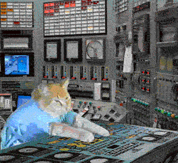
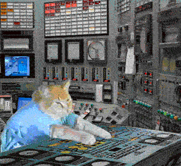
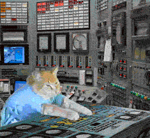

Thank you for visiting love1980songs.com!!!
"The hottest open source non-profit independent 1980's music collection on the webüçí"
Choose a playlist and listen free ♡


 


"The hottest open source non-profit independent 1980's music collection on the webüçí"
Choose a playlist and listen free ♡
